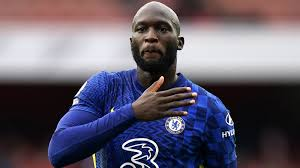
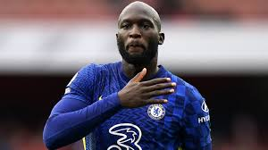

Verleden van Lukaku
Lukaku heeft een heel uniek verleden omdat hij de kans heeft gekregen om voor tal van wereldclubs te spelen waardoor hij zijn talent ook alleen maar verder heeft kunnen laten evolueren.
Ploegen
- Anderlecht
- Chelsea
- Everton
- Man United
- AS Roma
- Napoli

Familie van Lukaku
Lukaku is iemand die heel veel lof heeft naar zijn familie en ook echt alles voor ze over heeft. Lukaku heeft ook het geluk gehad om een deel van zijn speciaal avontur met een van zijn geliefden te delen, zo heeft zijn broer Jordan een tijdje samen met zijn broer romelu samen gespeeld in het belgische elftal ward gegarandeerd voor magische momenten heeft gezorgd. Doorheen zijn cariere is lukaku zeer goed bevriend geraakt met enkele grote namen die hij nu dus nog dagelijks spreekt en waarmij hij door de tijd heen een enorme band mee heeft opgebouwd. (hier even een lijstje van de meest close vrienden)
Goede vrienden
- Kevin De Bruyne
- Eden Hazard
- Jan Vertonghen
- Vincent Kompany
- Divock Origi
 
